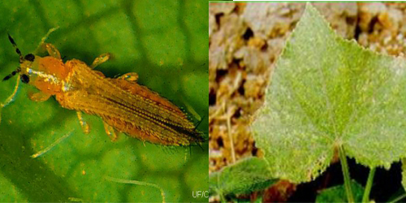
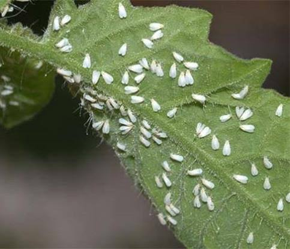
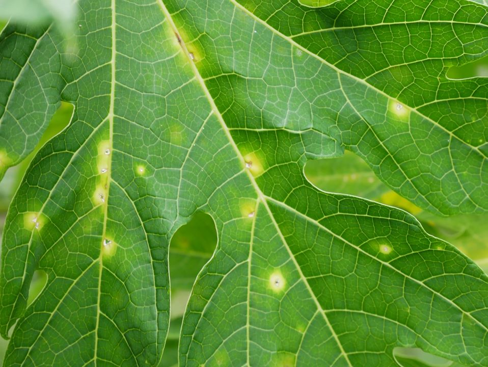
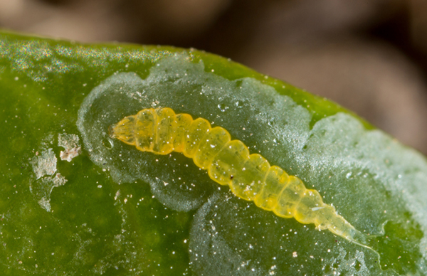
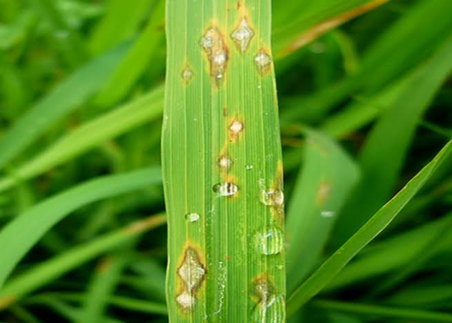
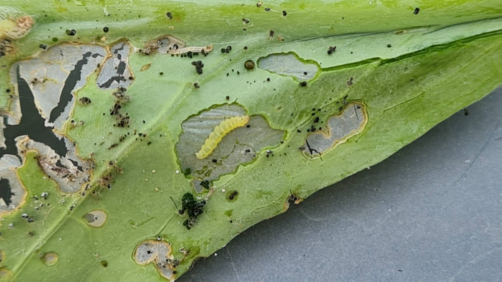

ค้นหาโรคและศัตรูพืช
เรียนรู้อาการผิดปกติของพืช โรคพืช และแมลงศัตรูพืช พร้อมแนวทางดูแลและป้องกันเบื้องต้น

เพลี้ยไฟ
แมลงศัตรูพืชในพืชผักและไม้ดอก ทำให้ใบมีรอยสีเงินและยอดอ่อนหงิกงอ

แมลงหวี่ขาว
แมลงสีขาวเล็ก ๆ เกาะอยู่ใต้ใบ พบได้ในพืชผักและไม้ประดับ

โรคใบจุด
ใบมีจุดสีน้ำตาลหรือดำ ลักษณะอาการแตกต่างตามชนิดพืชและสาเหตุ

หนอนชอนใบ
ใบมีรอยเส้นคดเคี้ยวสีอ่อน พบได้ในมะเขือเทศและผักตระกูลกะหล่ำ

โรคใบไหม้
แผลบนใบขยายรวมกันเป็นบริเวณกว้าง ควรตรวจชนิดพืชและสาเหตุร่วมกัน

หนอนใยผัก
กัดกินใบจนบางใสหรือเป็นรู พบในคะน้า กะหล่ำ และผักกาด